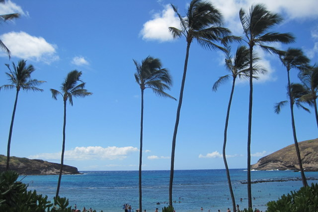

Hanauma Bay

Hanauma Bay

Hanauma bay nature preserve is one of the most popular tourist destinations on Oahu. The curved bay protects the beach from the waves and the coral attracts all kinds of colorful tropical fish, sea turtles, and other sea life making this one of the best snorkeling spots in Hawaii. Beginning snorklers can stay in shallow, protected water and still see amazing fish. You can see fish in places that are only waist deep. More advanced snorkelers and scuba divers can move into deeper waters. Lifeguards are on duty. There is a large sandy beach, picnic areas, and trails with breathtaking views.
Hanauma bay is located on the southeast coast of Oahu about 10 miles east of Waikiki off route 72 (the main coastal highway). It is easily reachable by car, bus (bus #22 from Kuhio ave in Waikiki), or taxi cab. There are also tour companies that will pick up at your hotel and provide snorkel gear. Get there early. The parking lot fills up by late morning, the bay gets crowded, the lines are long, and the water is not as clear.
Hanauma bay is open from 6am-7pm in the summer and 6am-6pm in the winter. It is closed on Tuesdays. Admission cost is $7.50 per person. Parking is $1 per car. A snack bar is available, or you can bring a picnic. Snorkel gear rental is available. Locker rentals are available to store valauables. Restrooms and showers are available.